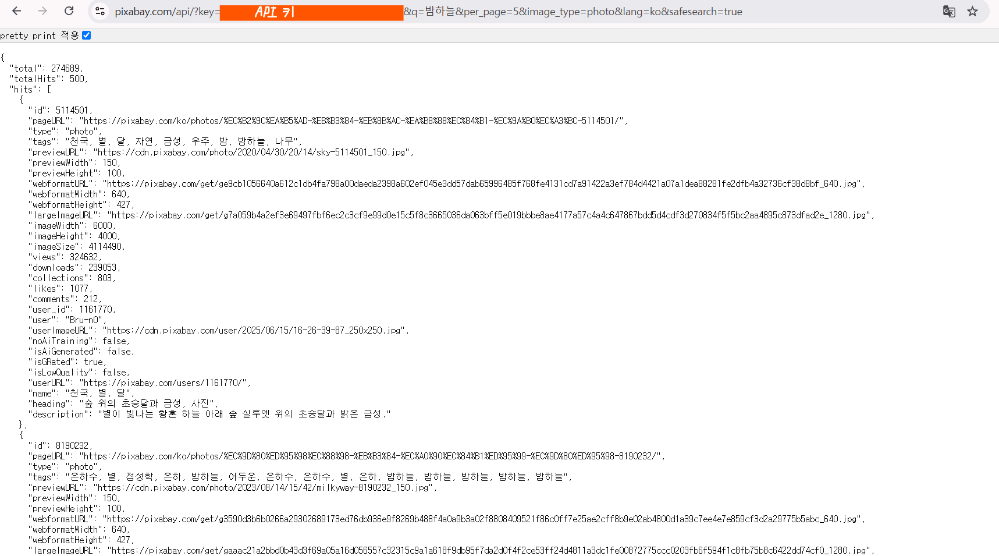

1. 이름, GitHub 아이디, 사이트 이름
- 이름 : 민윤희
- GitHub 아이디 : nan041768-ui
- 사이트 이름 : 과몰입보드
2. 누구를 위한 사이트인가?: 영화 사이트 계획
한 줄 : 영화 감상 후 해당 영화의 여운·분위기와 관련된 이미지 수집을 희망하는 영화 팬 대
- 보드 : TMDB 실시간 영화 목록, 제목 검색, 정렬(평점순·최신 개봉순·제목 가나다순), 찜 토글·저장 개수 표시
- 박스오피스 : KOBIS 일별 박스오피스 순위·관객 수·개봉일, TMDB 포스터
- 상세 : 세부 정보(선택 영화 TMDB 추가 호출 → 대형 포스터, 제목, 개봉일, 평점, 줄거리, 장르)
3. 플러스원 페이지 : TODO 페이지 이름
TODO 한 줄 소개(이 페이지에서 무엇을 할 수 있는지)
| API | 제공기관 | 대표 요청 주소 | 키 이름 | 키 발급 상태 |
|---|---|---|---|---|
| TODO API 이름 | TODO 제공기관 | TODO https://...KEY... |
TODO 예: FOOD_KEY |
TODO 받음 / 신청함(승인 대기) |
4. 주소창 호출 결과


5. 화면 스케치


6. 퍼뜨릴 계획과 받고 싶은 페이지
- 누구에게 : 리뷰·추천 중심 영화 사이트 제작한 학생
- 왜 쓸모 : 감상한 영화와 관련된 키워드에 맞는 분위기의 이미지/배경화면 조회 가능, 영화 감상의 여운 확장
- 받고 싶은 페이지 : 영화 원작 도서 찾기
7. 13~15주차 일정과 위험, 대안
- 13주차: TMDB 실시간 보드·상세·KOBIS 박스오피스 1차 점검
- 14주차: Pixabay 무드보드 플러스원 페이지 구현, 동료 PR 교환, pages.html 연결
- 15주차: 최종 제출
- 위험 1 및 대안: 한글 검색 결과 0건 ⇒ 빈 결과 안내 문구, 추천 분위기 키워드 버튼(밤하늘, 우주, 네온) 표시
- 위험 2 및 대안: Pixabay 호출 한도 초과·사용량 경고 ⇒ Enter·버튼 클릭 시점 호출 제한, 경고 시 키 재발급 후 keys.js 교체
- 위험 3 및 대안: 포스터·이미지 누락(null) ⇒ 대체 표지 출력